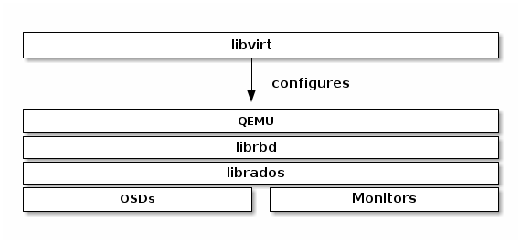

Notice
This document is for a development version of Ceph.
Install Virtualization for Block Device
If you intend to use Ceph Block Devices and the Ceph Storage Cluster as a
backend for Virtual Machines (VMs) or Cloud Platforms the QEMU/KVM and
libvirt packages are important for enabling VMs and cloud platforms.
Examples of VMs include: QEMU/KVM, XEN, VMWare, LXC, VirtualBox, etc. Examples
of Cloud Platforms include OpenStack, CloudStack, OpenNebula, etc.

Install QEMU
QEMU KVM can interact with Ceph Block Devices via librbd, which is an
important feature for using Ceph with cloud platforms. Once you install QEMU,
see QEMU and Block Devices for usage.
Debian Packages
QEMU packages are incorporated into Ubuntu 12.04 Precise Pangolin and later versions. To install QEMU, execute the following:
sudo apt-get install qemu
RPM Packages
To install QEMU, execute the following:
Update your repositories.
sudo yum update
Install QEMU for Ceph.
sudo yum install qemu-kvm qemu-kvm-tools qemu-img
Install additional QEMU packages (optional):
sudo yum install qemu-guest-agent qemu-guest-agent-win32
Building QEMU
To build QEMU from source, use the following procedure:
cd {your-development-directory}
git clone git://git.qemu.org/qemu.git
cd qemu
./configure --enable-rbd
make; make install
Install libvirt
To use libvirt with Ceph, you must have a running Ceph Storage Cluster, and
you must have installed and configured QEMU. See Using libvirt with Ceph Block
Device for usage.
Debian Packages
libvirt packages are incorporated into Ubuntu 12.04 Precise Pangolin and
later versions of Ubuntu. To install libvirt on these distributions,
execute the following:
sudo apt-get update && sudo apt-get install libvirt-bin
RPM Packages
To use libvirt with a Ceph Storage Cluster, you must have a running Ceph
Storage Cluster and you must also install a version of QEMU with rbd format
support. See Install QEMU for details.
libvirt packages are incorporated into the recent CentOS/RHEL distributions.
To install libvirt, execute the following:
sudo yum install libvirt
Building libvirt
To build libvirt from source, clone the libvirt repository and use
AutoGen to generate the build. Then, execute make and make install to
complete the installation. For example:
git clone git://libvirt.org/libvirt.git
cd libvirt
./autogen.sh
make
sudo make install
See libvirt Installation for details.
Brought to you by the Ceph Foundation
The Ceph Documentation is a community resource funded and hosted by the non-profit Ceph Foundation. If you would like to support this and our other efforts, please consider joining now.